Assignment 6: The web talks back!
Create a webpage with p5.js that interacts with your arduino. By doing things with your keyboard or mouse, things must change in the real world! Vice versa, by doing things on your arduino, the p5 page must also change. You must use JSON parsing, Serial, and p5.js. Your webpage must be interactive. You must use a minimum of two input devices from the arduino (e.g. the joystick counts as 2 inputs) and a minimum of one output device from the arduino, e.g. an LED.
Circuit Demo: This is a gif showing the circuit operations when assembled
Circuit Diagram:
This is a gif showing the circuit operations when assembled
Circuit Diagram:
 Schematic:
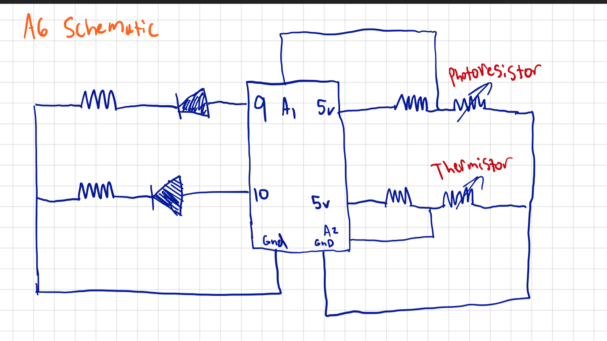
This is a schematic of my circuit.
Calculations:
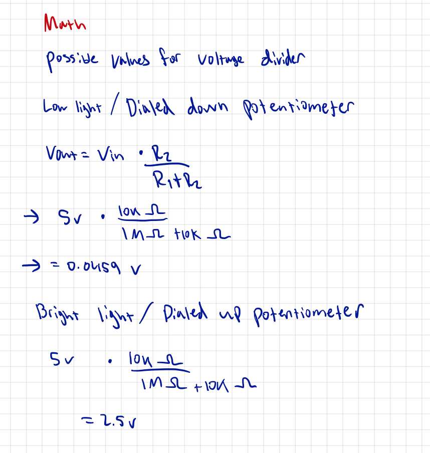
Code Snippet:
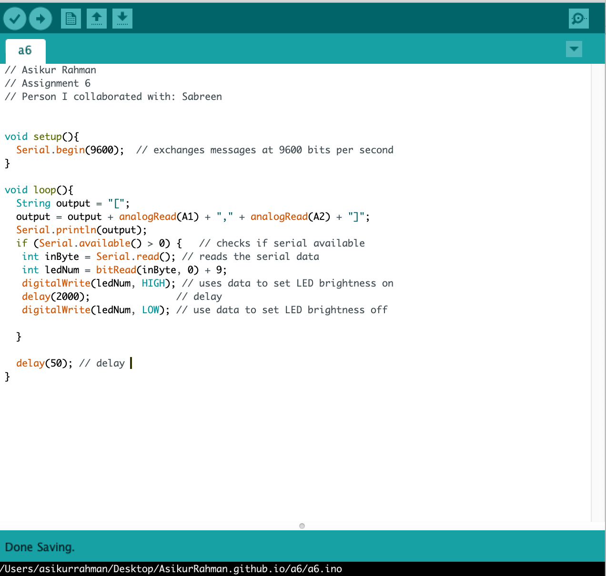
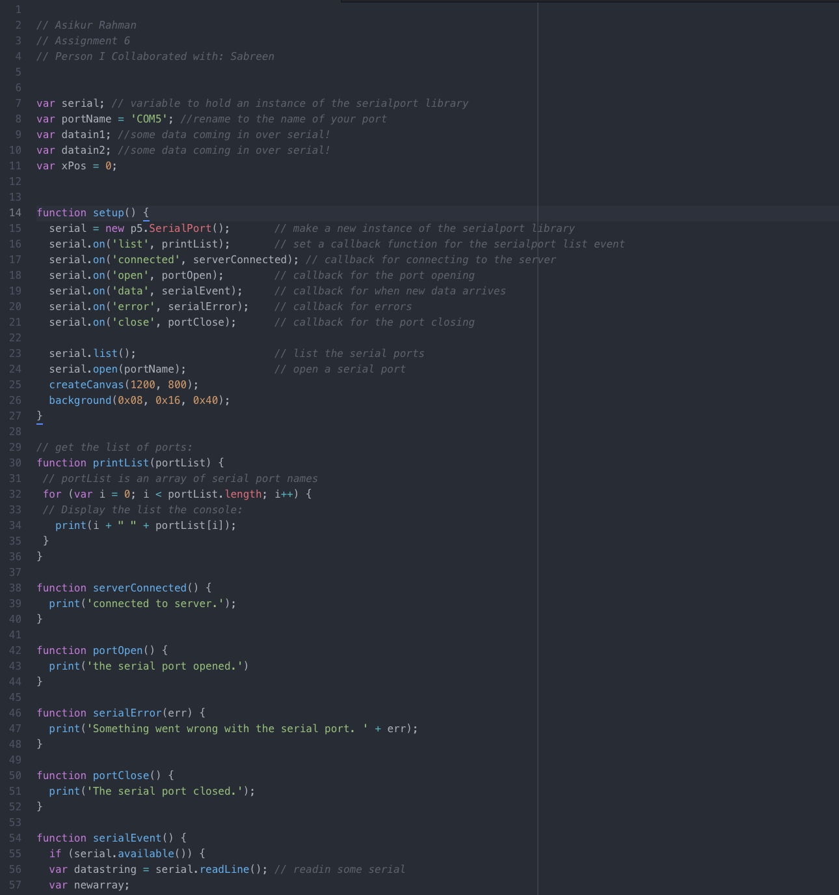
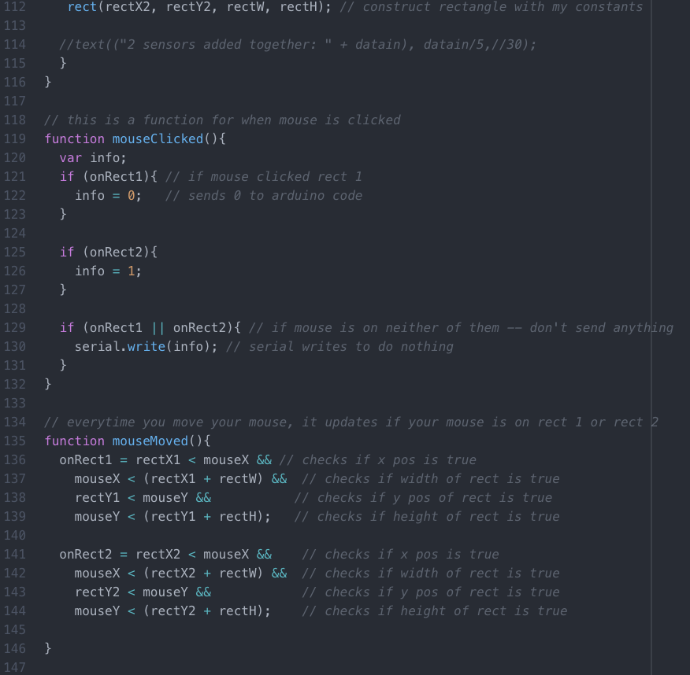
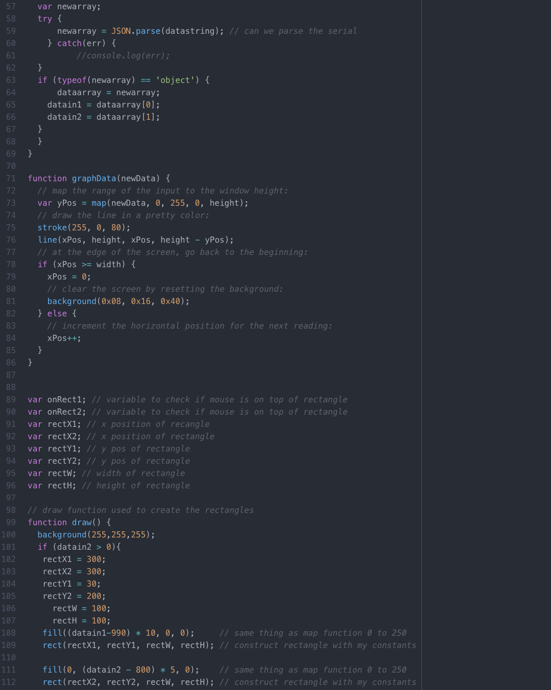
Schematic:
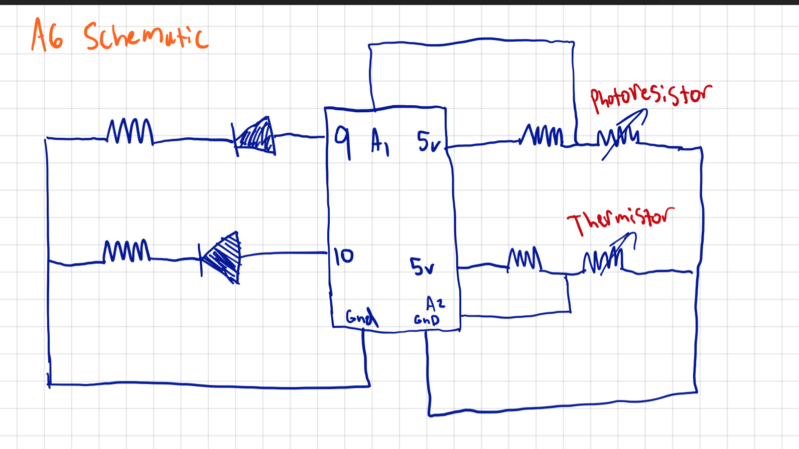
This is a schematic of my circuit.
Calculations:
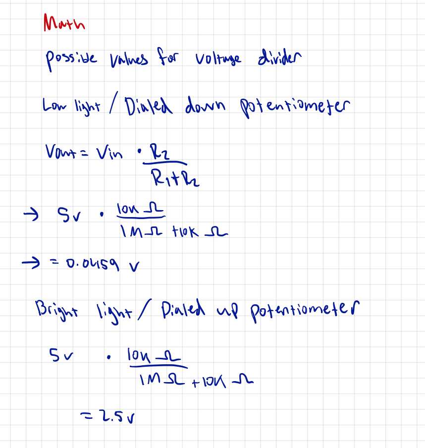
Code Snippet:
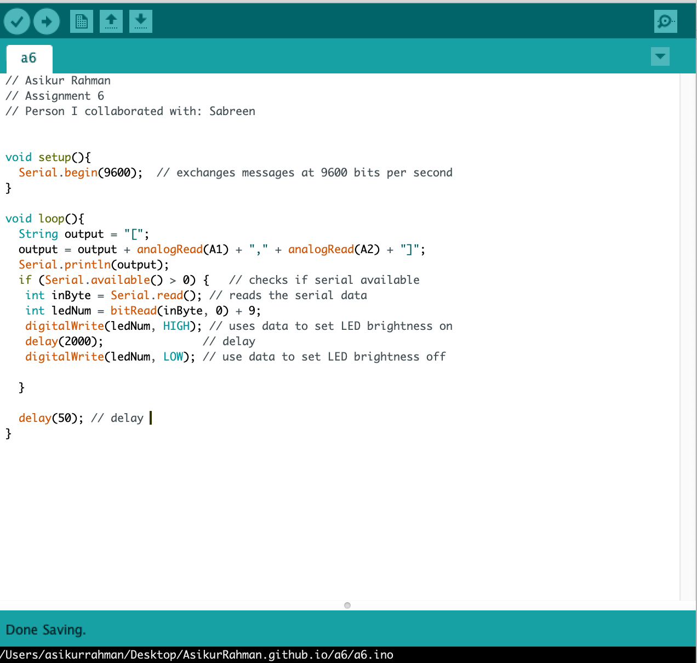
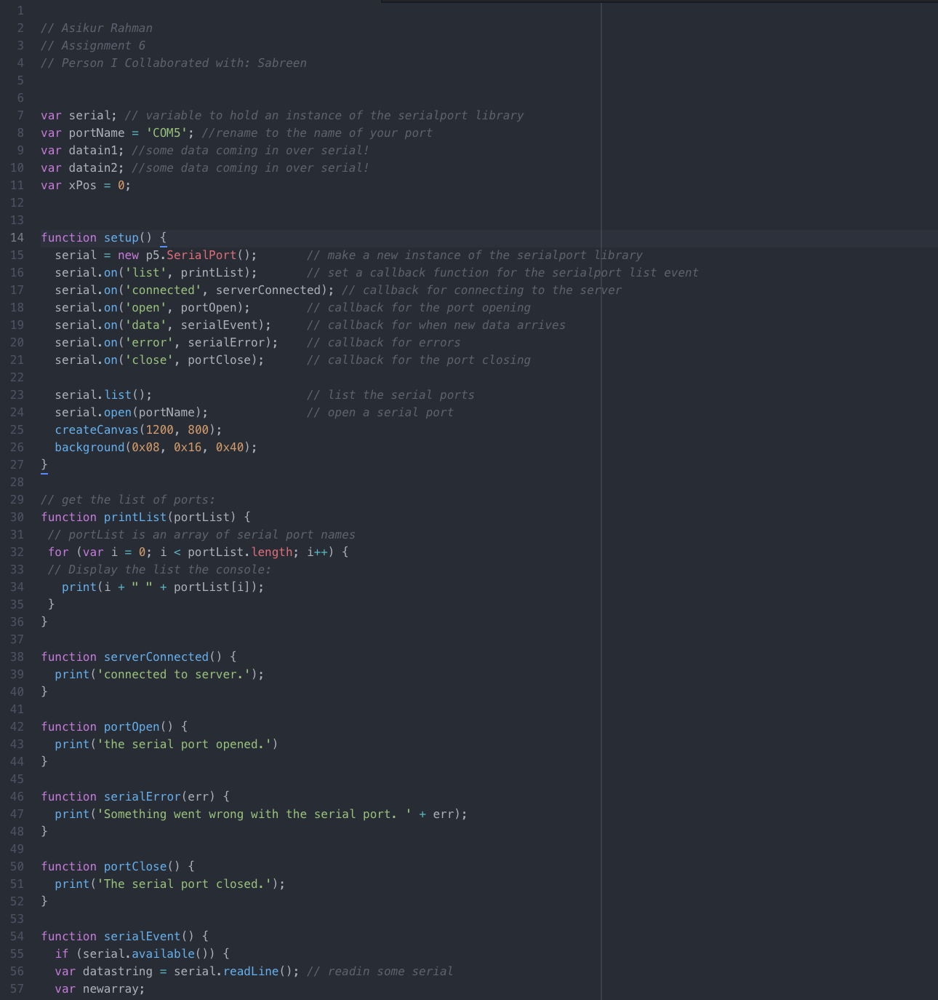
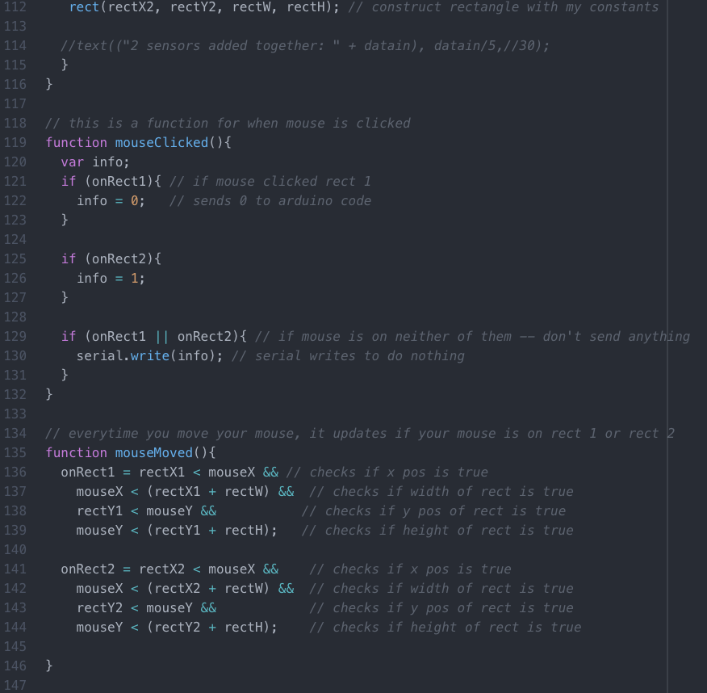
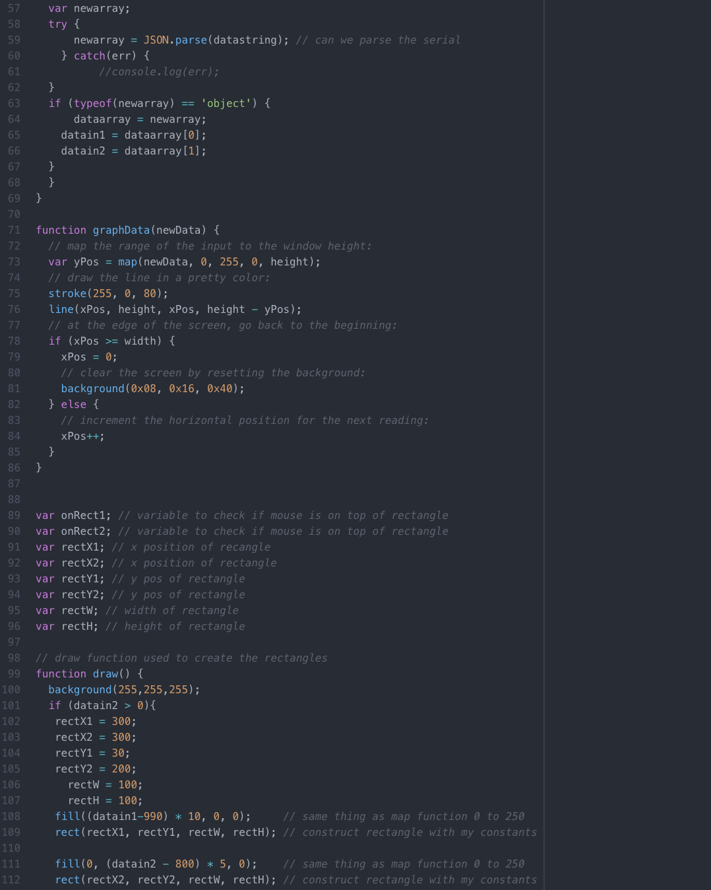